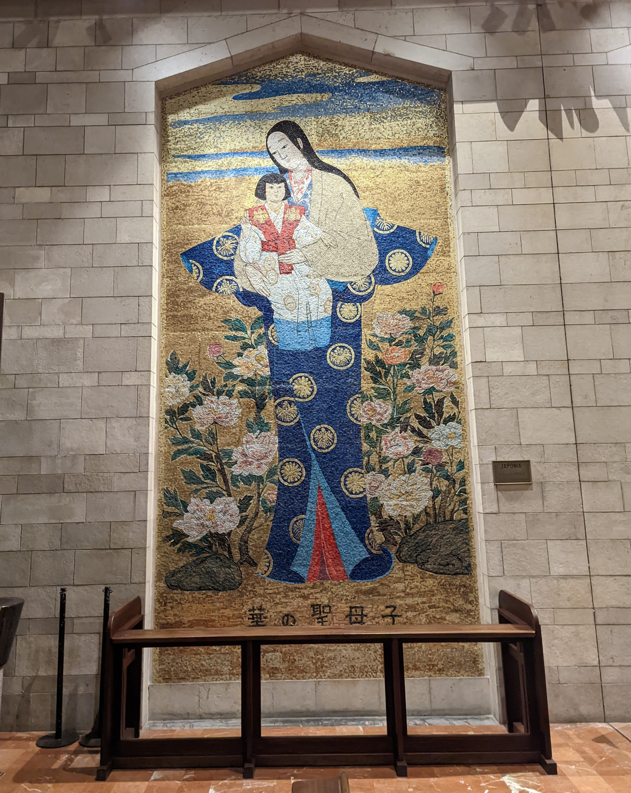
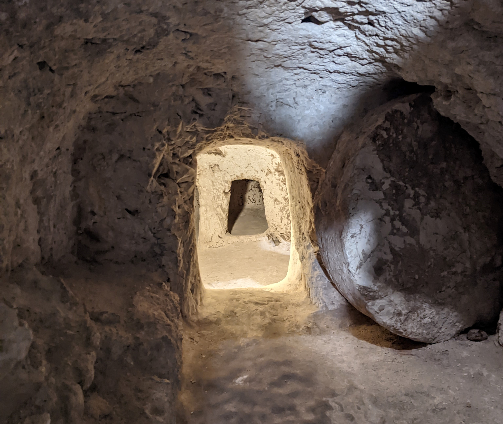
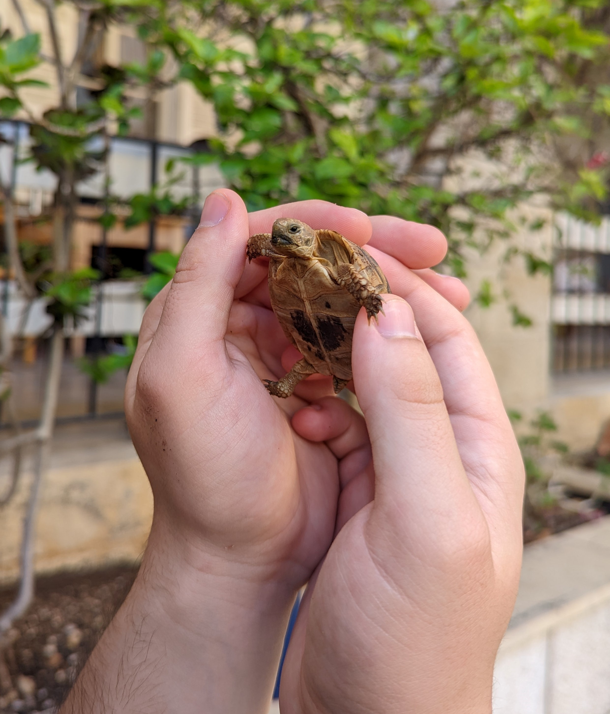

Today we went to the place where Jesus grew up. We started by visiting an old synagogue nearby where he would have lived, and we sang a hymn inside. Next, we went Church of the Annunciation, the central point of the whole city. This is the biggest church in the country, and it is built on the traditional Catholic sight of the annunciation, and place believed to be the home of Mary, Joseph, and Jesus while they were there.
 Every country donated their own rendition of the annunciation, or Mary and baby Jesus.My favorite part of the church was the artwork. There was an entire gallery in addition to the large pieces inside the church itself that were donated from every country where there is a catholic presence. I loved how each country was able to show their culture and artistic tradition and depict Mary in different styles.
 This tomb believed to possibly have been used by Joseph.While there, we stayed in the Sisters of Nazareth Convent, which isn't actually a convent anymore, but it was very interesting (in a good way). It is built on more archeological findings, including a tomb with a rolling stone that was typical for the time, one that Joseph could have been buried in, or one that could look like the one that Jesus was eventually placed in before he rose from the grave.
 One of several baby tortoises from the convent. A worker at the old Nazareth village shows us how pottery would traditionally have been made.
A worker at the old Nazareth village shows us how pottery would traditionally have been made.
The baby tortoises wandering around the little gardens in the courtyard of the convent were one of my favorite parts, though. The last thing we did in Nazareth was visit a restored village that is based on what Nazareth would have looked like in the time of Christ, built around the ruins of a vineyard and winepress there.